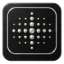

Canvas controls
Choose Canvas size above, then select Create Lumen post to apply the layout.
Your next post starts here
Choose a template from your library, or start with a background.
You can also drop an image onto this canvas.

Choose Canvas size above, then select Create Lumen post to apply the layout.
Your next post starts here
Choose a template from your library, or start with a background.
You can also drop an image onto this canvas.